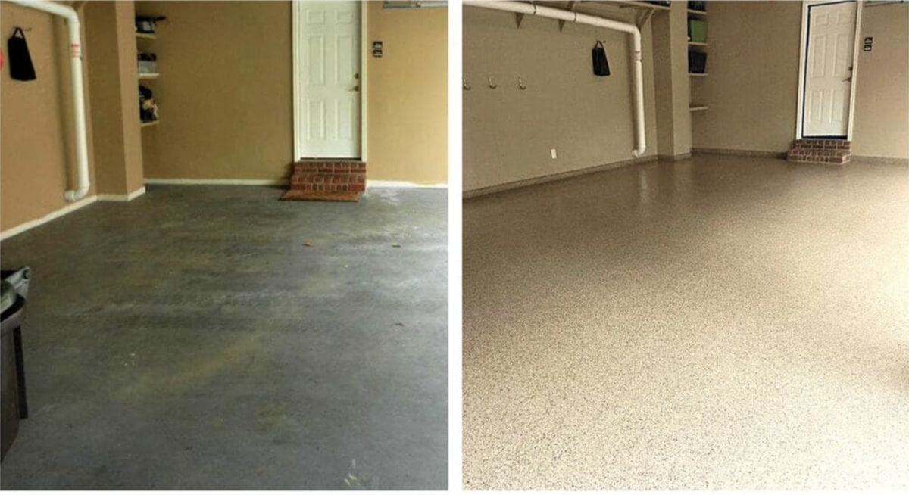

Yuma, AZ — Serving Yuma County
Garage Floor Epoxy in Yuma, AZ
Multi-coat garage floor systems with UV-stable polyaspartic topcoats. Built for 115°F desert heat, intense Arizona sun, and fine Sonoran dust.

Multi-coat garage floor systems with UV-stable polyaspartic topcoats. Built for 115°F desert heat, intense Arizona sun, and fine Sonoran dust.
Garage floor epoxy is a multi-layer concrete coating system that seals your slab against oil, hot tire marks, desert dust, and chemical spills. A professionally installed system bonds chemically to the concrete—it doesn’t peel the way DIY kits do—and lasts 10 to 20 years with normal use.
Yuma garages face conditions that end standard epoxy fast: concrete slabs that hit 130°F by noon, UV radiation that yellows unprotected resins within one season, and the finest desert dust that works into every pore of bare concrete. We address all three on every install—diamond grinding, heat-stable epoxy base coat, and a UV-stable polyaspartic topcoat rated for continuous heat above 140°F.
Unlike Tucson, Yuma rarely sees monsoon moisture vapor pushing through slabs, but the extreme thermal expansion from day-to-night temperature swings does create stress on coatings that aren’t flexible enough. We spec systems with the right elongation ratings for Yuma’s specific climate.
There’s a failure mode specific to peak Yuma heat that’s easy to miss until it happens: hot tire pickup. When a vehicle sits on a slab that’s baked past 130°F, softened epoxy flooring can stick to warm rubber and peel away in strips as the tire rolls off, leaving visible tread marks in the coating. Slab surface temperature also runs well above the air temperature reading—a 95°F morning can mean a 115°F slab by early afternoon—which is why we track slab temp, not just the forecast, before scheduling every install.
See all services →Color chip systems in dozens of blends. Decorative, durable, and naturally slip-resistant.
Clean, uniform finish with polyaspartic topcoat. The most affordable garage floor system.
UV-stable, heat-rated final coat. Standard on every Yuma install we do.
Swirled, one-of-a-kind finishes for showroom garages and high-end residential spaces.
A few situations where calling sooner protects your concrete and your investment.
Bare concrete is porous. Every leak from your car soaks in and becomes permanent. An epoxy coating keeps spills on the surface where you can wipe them up in seconds.
Store-bought epoxy and thin coatings crack and peel when Yuma garages reach 130°F. If yours is starting to flake, it’s time for a proper polyaspartic system before the damage gets worse.
Bare concrete dusts and crumbles under foot traffic and vehicle tires. An epoxy-sealed floor stays intact and wipes clean with a mop—no more tracking Yuma’s fine dust into the house.
Adding a workshop, gym, or man cave? Epoxy transforms raw concrete into a clean, professional surface in one or two days without the cost of tile or wood flooring.

Early-morning application before slab temperatures climb is standard on every Yuma garage floor job.
We schedule most Yuma garage jobs to start before 7 AM, when slab temps are still manageable. Here’s what happens on your project:
We inspect the slab for cracks, previous coatings, and contamination. This tells us which prep approach your specific floor needs before a drop of epoxy goes down.
Mechanical grinding opens concrete pores and removes any old coatings or sealers so the epoxy bonds at the chemical level—not just sitting on top.
Hairline cracks get filled and leveled before coating so they don’t telegraph through the finished floor surface.
We apply the base coat and broadcast decorative flake or metallic pigment while the epoxy is still wet. Working time in Yuma’s heat is short—this step requires speed and experience.
The final coat is UV-stable polyaspartic rated for continuous heat above 140°F. This is what protects the floor from yellowing and keeps it looking sharp for years in direct Arizona sun.
We don’t use one-size-fits-all products. Every system we specify accounts for Yuma’s UV intensity, thermal cycling, and extreme summer heat—not national average conditions.
We start before the slab heats up. That’s not a convenience—it’s the reason our coatings bond correctly in a climate where a late-morning start can mean a failed install.
We look at your floor and give you a written number. If a repair or different prep approach will affect cost, we tell you before we start—not after.
A correctly installed floor is only half the job—how it’s cared for determines whether your epoxy flooring still looks new in year fifteen or starts showing wear in year five. Yuma’s climate is harder on floor coatings than almost anywhere else in the country, so the care routine here looks a little different than it would somewhere mild.
Fine Sonoran dust works into everything, and left alone it acts like sandpaper under foot and tire traffic. Sweep or dust-mop every day or two with a soft-bristle broom or microfiber head, and after a dust storm blows through, a quick rinse with a garden hose restores the shine faster than sweeping alone.
Slab surfaces here regularly exceed 130°F by early afternoon. Give a vehicle a few minutes to cool before parking on a fresh install, and during peak summer avoid parking in the exact same spot every day—rotating tire position spreads out the heat load instead of concentrating it in one section of coating.
Use mild soap and water or a pH-neutral cleaner for routine cleaning. Skip bleach, citrus-based cleaners, and abrasive powders—all three slowly dull a polyaspartic topcoat over repeated use. Save the pressure washer for genuinely stubborn stains, and keep it under 1,200 PSI.
Yuma sees far less monsoon moisture than Phoenix or Tucson, but the storms that do roll through in July and August drop dust and grit fast. Increase cleaning frequency for a few weeks during monsoon season, and check garage door seals beforehand—keeping bulk water out matters more than the occasional wet floor.
Recoat the topcoat every 10 to 15 years even if the floor still looks fine—UV exposure this intense breaks down clear coats from the inside before visible damage shows up. Rubber mats under jack stands and heavy shelving prevent the point-load scratches that are the most common reason an otherwise healthy floor starts looking rough.
Epoxy flooring isn’t the only way to upgrade a bare slab, and it’s worth knowing what else is out there before you commit. Here’s how the two most common alternatives stack up against a coated floor in Yuma’s climate.
Polished concrete costs about the same per square foot and gives a sleek, minimalist look. It skips the coating altogether, grinding and sealing the slab itself, so there’s no film to yellow under UV. The trade-off: any existing cracks, stains, or discoloration in the slab stay visible, and polished concrete offers far less protection against oil stains and hot-tire pickup than a proper polyaspartic system.
Snap-together tiles install fast and can be replaced piece by piece if damaged. In Yuma’s heat, though, the plastic used in most tile systems softens and can warp under a hot vehicle in direct summer sun, and gaps between tiles trap desert dust that’s hard to sweep out. They’re a reasonable short-term fix for a rental; they’re not built for 20-year durability in this climate.
Between the three, a properly specified epoxy flooring system is the only option engineered specifically to handle 130°F slab temperatures, constant UV, and fine desert dust at once. It costs more upfront than tiles, but the 10-to-20-year lifespan and one-piece seamless surface make it the option most Yuma homeowners land on after comparing all three.
Most Yuma residential garages run $600–$4,800 installed. What moves the price:
| Garage Size | Solid-Color System | Full-Flake System |
|---|---|---|
| Single-car (~200 sq ft) | $600 – $1,200 | $900 – $1,800 |
| Two-car (~400 sq ft) | $1,200 – $2,400 | $1,800 – $3,600 |
| Three-car (~600 sq ft) | $1,800 – $3,600 | $2,700 – $5,400 |
| Crack repair (per lin ft) | $3 – $8 per linear foot | |
Prices above are installed estimates for Yuma, AZ as of 2026. Surface condition, square footage, and access affect final cost. Call us for a project-specific number.
📞 Get Your Free EstimateNot sure which situation you’re in? A quick phone call usually answers it. We’ll be straight with you.
Garage floor epoxy in Yuma runs $3–$12 per square foot installed. A two-car garage (400 sq ft) typically falls in the $1,400–$3,600 range for a full-flake system with polyaspartic topcoat. Surface condition, crack repairs, and system type are the main price drivers. Call (928) 817-8550 for a written estimate.
A professionally installed system with a UV-stable polyaspartic topcoat lasts 10–20 years in Yuma garages. Big-box kits typically fail in 1–3 years because they’re applied to poorly prepared concrete and lack the UV resistance to handle Arizona sun. Proper diamond grinding and topcoat selection are what determine longevity.
Yes, with the right system. Yuma’s combination of extreme heat, intense UV, and fine desert dust makes bare concrete impractical as a finished garage surface. A properly installed polyaspartic system handles all three conditions and gives you a surface that’s easy to maintain year-round.
Epoxy bonds strongly to concrete and makes an excellent base coat. Standard epoxy topcoats yellow under UV and can soften when slab temperatures get extreme. Polyaspartic is a newer generation coating that resists UV completely and stays rigid above 140°F. We use epoxy as the base and polyaspartic as the final coat on every Yuma garage install.
DIY kits are thin (under 3 mils), applied to unprepared concrete, and formulated for average temperatures. In Yuma, where a slab hits 100°F by midmorning in summer, the working time on a standard epoxy mix shrinks so fast that most people can’t finish a single-car garage before it starts to set. Professional systems use fast-cure formulations calibrated for desert conditions.
Light foot traffic is safe after 24 hours. Driving on the floor is typically safe at 72 hours. In Yuma’s dry climate, cure often runs slightly faster than national averages because low humidity accelerates the process. We walk every client through their specific cure schedule before we leave.
Free estimates. Most jobs complete in one to two days. Early-morning scheduling standard.